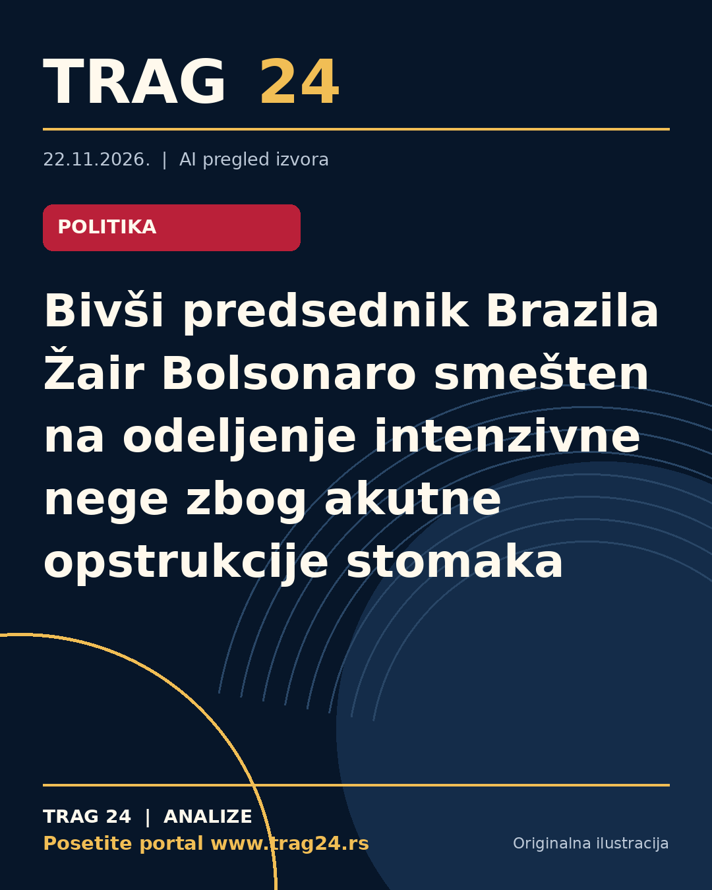

Bivši predsednik Brazila Žair Bolsonaro smešten na odeljenje intenzivne nege zbog akutne opstrukcije stomaka

ŠTA SE DOGODILO
Bivši predsednik Brazila Žair Bolsonaro hospitalizovan je i smešten na odeljenje intenzivne nege u bolnici DF Star u Braziliji. Razlog hospitalizacije je akutna opstrukcija u stomaku, zbog čega mu je postavljena želudačna sonda i započeta terapija za održavanje hidratacije.
HRONOLOGIJA
Bolsonaro je bio predsednik Brazila od 2019. do 2022. godine. Nakon poraza na predsedničkim izborima 2022. godine od aktuelnog predsednika Luiza Inasija Lule da Silve, Bolsonaro je prošle godine osuđen na 27 godina zatvora zbog optužbi za planiranje državnog udara. Tokom 2018. pretrpeo je ranjavanje nožem u stomak na jednom predizbornom skupu, što je prouzrokovalo ranije hospitalizacije i operacije. Trenutno je smešten u bolnici DF Star u Braziliji zbog nove dijagnoze.
ŠTA NAVODE IZVORI
Agencije Nova.rs i Danas prenose da je zvanična potvrda o Bolsonarovoj hospitalizaciji stigla iz bolnice DF Star u Braziliji. Oba izvora navode da je britanska agencija Rojters prenela informaciju o akutnoj opstrukciji stomaka kao uzroku hospitalizacije. Navodi se da je Bolsonaro klinički stabilan i svestan, ali za sada nema najava o njegovom otpuštanju iz bolnice.
ŠTA JE POTVRĐENO
Potvrđeno je da je bivši predsednik Žair Bolsonaro smešten na odeljenje intenzivne nege u bolnici DF Star u Braziliji zbog akutne opstrukcije u stomaku. Lekari su postavili želudačnu sondu i započeli terapiju za održavanje hidratacije. Takođe, potvrđeno je da Bolsonaro izdržava zatvorsku kaznu od 27 godina zbog optužbi za planiranje državnog udara posle predsedničkih izbora 2022. godine.
ŠTA NIJE POTVRĐENO
Iz dostupnih izvora nije potvrđeno da postoji neposredna opasnost po život bivšeg predsednika niti da postoje planovi za njegov skoriji otpust iz bolnice. Takođe, detalji o toku terapije i tačnoj medicinskoj proceni nisu javno dostupni.
ŠTA OSTАJE OTVORENO: Ostaje nejasno koliko će trajati bolničko lečenje bivšeg predsednika i da li će zdravstveno stanje uticati na njegov boravak u zatvoru. Takođe, nije poznato da li postoje dodatne komplikacije ili druge medicinske poteškoće povezane sa trenutnim zdravstvenim stanjem Bolsonara.
Izvori
- https://nova.rs/vesti/svet/bivsi-predsednik-brazila-zair-bolsonaro-smesten-na-odeljenje-intenzivne-nege/
- https://www.danas.rs/svet/bolonaro-na-intenzivnoj-nezi/
Ova analiza je pripremljena uz pomoć veštačke inteligencije na osnovu javno dostupnih izvora. Navodi izvora nisu nužno nezavisno potvrđeni.